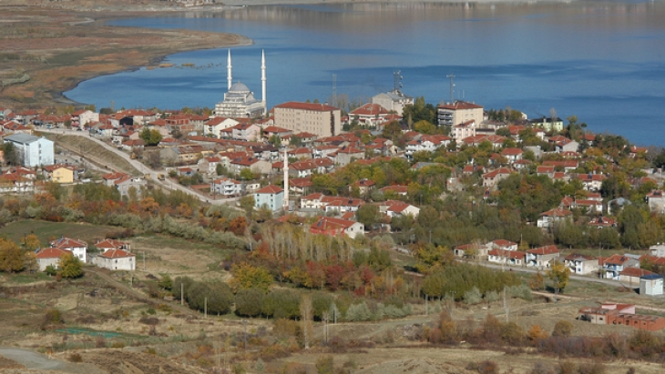

İlçenin nüfusu 2019 yılı verilerine göre 13.764'tür.İlk tunç Çağına kadar uzanan yerleşim izlerine rastlanmış olan yörenin Elazığ merkezine uzaklığı 38 km'dir.En son Romalı'lar ve Bizanslı'lar devrinde de yerleşim merkezi olduğu belirlenen ilçede tarım ve hayvancılık ağırlıklıdır.Özellikle kayısı, yörenin en bilinen tarım ürünüdür.Bu çerçevede 1996 yılında ilçede kayısı entegre tesisi kurulmuştur.Resmi verilere göre yıllık olarak yaklaşık 68.000 ton kayısı üretildiği saptanmıştır.
İlçenin nüfusu 2019 yılı verilerine göre 13.764'tür.İlk tunç Çağına kadar uzanan yerleşim izlerine rastlanmış olan yörenin Elazığ merkezine uzaklığı 38 km'dir.En son Romalı'lar ve Bizanslı'lar devrinde de yerleşim merkezi olduğu belirlenen ilçede tarım ve hayvancılık ağırlıklıdır.Özellikle kayısı, yörenin en bilinen tarım ürünüdür.Bu çerçevede 1996 yılında ilçede kayısı entegre tesisi kurulmuştur.Resmi verilere göre yıllık olarak yaklaşık 68.000 ton kayısı üretildiği saptanmıştır.

Baskil ve Battalgazi arasındaki Karakaya Baraj gölü üzerine kurularak Haziran 1986 ' da açılan Kömürhan Köprüsü bulunmaktadır. Türkiye'nin en uzun demiryolu köprüsü de Baskil'in Kuşsarayı köyündedir.Baskil ilçesinde Kültür varlıkları arasında; Abdulvahap Türbesi, Zeynep türbesi, Hasan Baba Türbesi, Teslim Abdal Türbesi ve Mezarlığı, Muşar Dağı Kilisesi yer almaktadır.